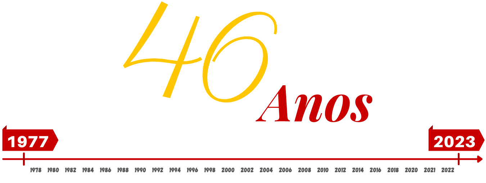

<div class="container mt-3">
  <div class="row align-items-center">
    <div class="col">
      
    </div>
    <div class="col">
      <h1 class="text-danger">Sobre nós</h1>
        <p>Em 1976, foi criada uma comissão composta de produtores e técnicos que passaram a trabalhar juntos à comunidade do interior dos municípios de São Joaquim, Urupema e Bom Jardim da Serra, para assim viabilizar a criação de uma cooperativa.</p>
        <P>Fundada em 1977 a “Cooperativa Regional Agropecuária Serrana“, conhecida hoje, como Cooperserra, está sediada em São Joaquim, conta também com uma filial na cidade de Urupema ambas na Serra Catarinense.</P>
        <p>Possui atualmente 101 cooperados, 150 colaboradores diretos e mais de 500 indiretos, assim fazendo do cooperativismo sua bandeira, e sempre fortalecendo sua marca.</p>
    </div>
    <div class="mb-5">
      
    </div>
  </div>
</div>
